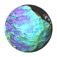

音乐的寂静春天
Here you will find the recorded music of Silent Spring. These songs are inspired by the lifes and times of those within the band, as well as observations, fictional scenarios, and messages which we want to convey. These songs are also presented to you in a raw, self produced form, which you will find differs from the mastered versions on streaming services. You may also find rarities, exclusive tracks, and other speculative ideas that we want to share with people, outside of the formal releases that we have on distrubution services.
Chapter 1
This first set of songs was composed between late 2023, through to the Summer of 2026. It is largely inspired by darker bands from the Britpop era, such as Garbage, early Manic Street Preachers, and 00s bands such as Bloc Party. Lyrically, it is a compilation of poetry which has been written over the same time period by Chris, touching on personal themese, as well as matters important to him, such as animal experiences, and environmental justice, with inspiration from the latter particularly stemming from the BBC documentary, Under Poisoned Skies, which was directed by his friend Owen Pinnell.

Crescent
Dairy